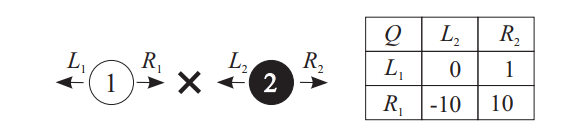

从综述开始,我觉得比较好的两篇:
[1]: Multi-agent reinforcement learning(MARL): An overview,2010
多智能体系统由一群自主,可交互的实体组成,它们共享一个环境,并由传感器感知环境,执行器采取行动.这一系统在各种邻域已有应用,如机器人团队,分布式控制,资源管理,协作决策系统collaborative decision support system,数据挖掘等.尽管可以对智能体赋予预设行为,但因为环境的复杂性,在随时间变化的环境中,先前良好的行为可能会变得不合适或者难以实施,所以它们经常需要在线学习新的行为,从而使智能体或整个多智能体性能提升[115,106].
强化学习rl通过与动态环境交互来进行学习.在每个时间步长,agent会感知环境状态,并采取行动,从而转到一个新的状态.设计奖励函数对其评估,agent必须在交互过程中将奖励累积最大化.强化学习反馈的信息量比监督学习少,但多于无监督学习[104].单智能体任务的rl算法比较成熟(有易于理解,且经证明收敛的算法).对设定进行一些简化或者泛化,使得rl也可以用于多智能体中.
本文全面概述了marl,主要关注自主agent使用rl(temporal-difference rl)算法在线学习解决动态任务.并讨论了博弈论对marl(及静态任务的重要算法)的贡献.我们首先指出marl的优势及挑战.实际上该领域的关键在于为multi-agent system定义恰当的目标.我们介绍了文献中提出的不同学习目标,一方面考虑了系统的稳定性,另一方面也考虑了agent对其它agent不断变化行为的适应性.本章的核心包括对marl代表性算法详细概述.
按任务类型组织算法:fully cooperative完全合作(fcoo), fully competitive完全竞争(fcom),以及mixed;然后根据学习目标的类型确定目标:稳定性,适应性或两者结合.此外,我们简要讨论marl技术应用领域,并在一个模拟实例中进行比较.该实例设计两个协作agent运输目标物体.在展望中,我们提出一些未解决的问题及有希望的方向.
本文其余部分安排如下,sec2介绍了单agent的rl,marl,博弈论的必要背景.sec3回顾了marl的主要优缺点.sec4介绍了有代表性marl算法目标.sec5对marl进行了分类.sec6回顾了几个应用领域,sec7提供了一个实例(运输目标物体).sec8总结了marl前景.sec8介绍了相关工作,sec10总结.
sec2:RL背景
本节介绍了但智能体,多智能体rl的相关背景.首先,介绍single-agent学习任务及求解算法.然后过渡到多智能体的强化学习marl,讨论仅限于具有有限数量的离散状态和动作空间.实际上大部分marl算法也是在这设定下提出的.
the single-agent(sa) case(可以参考上一篇笔记)
sarl可以用markov 决策过程表示,定义如下:
(def1). 有限markov决策过程是一个4元组$<X,U,f,\rho>$ ,$X$表示agent的状态空间,$U$是动作空间,$f:X\times U\times X\rightarrow [0,1]$是状态转移概率函数,
$\rho:X\times U\times X\rightarrow R$是奖励函数.
$x_k\in X$描述每个离散时间步$k$的状态,agent观察状态并采取一个动作$u_k$.作为结果,agent状态根据状态转移函数$f(x_k,u_k,x_{k+1})$转移到了下一个状态.agent再由奖励函数$\rho(x_k,u_k,x_{k+1})$获得奖励$r_{k+1}\in R$.该奖励对动作$u_k$进行评估.但从表达式看,它并没有说明这一行动长期效果.我们假设奖励有界.
对于确定性系统,转移概率函数变成$f’:X\times U\rightarrow X$.此时即时奖励仅与当前状态和动作有关,即$r_{k+1} = \rho’(x_k,u_k)$.某些markov决策过程具有最终状态(吸收状态?).从最终状态获得奖励为0.在这种情况下,学习过程通常分为不同的回合(就像那个寻找宝藏的例子).
agent在任一状态下如何选择决策的过程称为agent的policy策略.策略可以是随机的$h:X\times U\rightarrow [0,1]$,也可以是确定性的$h’:X\rightarrow U$.agent的目标就是找到一种策略,可以从每个状态$x_k$,最大化期望折扣收益:
$R^h(x)=E[\sum\gamma^kr_{K+1}|x_0 =x,h]$
其中$\gamma\in[0,1]$为折扣因子,刻画了未来收益的不确定性,目的是保证从长远来看,收益$R$代表了奖励的累积.然而agent每次只能获得当前步的即时奖励.将其转换成通过计算最佳 state-action value 函数(q-函数).$Q^h:X\times U\rightarrow R$给出策略$h$从任何状态-动作中获得的预期收益.
$Q^h(x,u)=E[\sum\gamma^kr_{K+1}|x_0 =x,u_o=u,h]$
最优$Q$函数定义为$Q^{*}(x,u)=max_hQ^h(x,u)$.并满足bellman方程:
$Q^{}(x,u)=\sum_{x’\in X}f(x,u,x’)[\rho(x,u,x’)+\gamma max_{u’}Q^{}(x’,u’)],\forall x\in X,u\in U$
等式表明在状态$x$下采取动作$u$的最优回报是期望的即时回报，加上下一状态的最优(折扣)回报值.当$Q^{*}$计算好后,最优策略就是在每一状态下,选择回报最大的动作.
$h’^{}(x)=arg \max_uQ^{}(x,u)$
当多个动作达到最大$Q$值时,可以选择任意一个,并且保持策略最优.在这种情况下,arg
运算符被解释为仅返回有效解决方案(u)之一.以这种方式最大化Q的策略被认为是贪婪的,因此可以首先确定$Q^{}$,然后计算$Q^{}$中的贪婪策略来找到最优策略.
已经存在很多rl算法,比如基于在线估计q函数的model-free方法[6,89],model-based方法(通常称为动态规划,dynamics programming)[8,96].以及model-learning方法(估计模型,然后使用model-based技术)[79,119].the model包括转移概率和奖励函数.许多marl都是从q-learning[137]的model-free算法得出的,例如[17,42,49,67,69,70].
q-learning是一种将bellman方程迭代近似求解的方法:
$Q_{k+1}(x_k,u_k)=Q_k(x_k,u_k)+\alpha [r_{k+1}+\gamma max_{u’}Q_k(x_{k+1},u’)-Q_k(x_k,u_k)]$
算法先随机初始化$Q(x,u)$值,然后不停迭代更新.方括号之间的是temporal difference.即当前$Q_k(x_k,u_k)$估计与更新估计$r_{k+1}+\gamma max_{u’}Q_k(x_{k+1},u’)$间的差.这个新的估计是bellman的右侧的一种迭代版本.在这里,$x’$由下一状态$x_{k+1}$替换,$\rho(x_k,u_k,x’)$被奖励$r_{K+1}$替换.学习率$\alpha$随时间变化,一般降低.
在以下条件下,序列$Q_k$证明收敛于$Q^{*}$:
1 | - explicit,distinct values of Q-function被存储并且对于每个状态-动作对更新 |
除此之外,agent一直以非零概率在所以状态下尝试所有动作,这称为探索.例如在每个步骤中随机以$e\in (0,1)$中选择随机动作,$(1-e)$选择贪婪动作.就得到了$e-$贪婪探索过程.当然还可以使用boltzmann探索过程,agent在状态$x$下依概率$h(x,u)$选择动作,定义如下:
$h(x,u)=\frac{e^{Q(x,u)/\tau} }{\sum_{u’}e^{Q(x,u’)/\tau} }$
$\tau$为超函数,当$\tau$接近0,agent倾向选择最优动作,当其无限大,agent随机.
the multi-agent case
markov决策过程泛化到ma情形则是随机博弈.
(def2)随机博弈是一个多元组$<X,U_1,…,U_n,f,\rho_1,…,\rho_n>$,n为agent个数,$X$是状态集合,$U_i$为其对应的动作空间,所有agent动作空间为$U=U_1\times…\times U_n$.$f:X\times U\times X\rightarrow [0,1]$是状态转移函数.$\rho_i:X\times U\times X\rightarrow R,i=1,..,n$是每个agent奖励函数.
依旧假定奖励函数有界.在ma情形下,转移函数是每个agent联合动作的结果,$u_k=[u^T_{1,k},…,u^T_{n,k}]^T,u_k\in U,u_{i,k}\in U_i$.每个agent的策略$h_i:X\times U_i\rightarrow [0,1]$,所有agent的策略组成了联合策略joint policy $h$.因为奖励函数$r_{i,k+1}$取决于联合行动,所以其回报也取决于joint policy:
$R^h_i(x) = E{ \sum \gamma^kr_{i,k+1}|x_0=x,h }$
Q函数(depends on joint action and on the joint policy)
$Q^h_i(x,u) = E{ \sum\gamma^kr_{i,k+1}|x_0=x,u_0=u,h }$
在完全合作的随机博弈张,所有agent的奖励函数相同:$\rho_1=..\rho_n$.因为所有agent具有相同的目标:最大化收益.假设$n=2$,且$\rho_1=-\rho_2$,两个agent具有相反的目标,随机博弈完全竞争的.混合博弈mixed game是除上述之外的博弈.
static, repeated,and stage games(待研究)
许多marl算法是为static game或者以stage-wise fashion方式work设计的.接下来介绍有关static games的博弈理论[3,39].
static game 是一种无状态信号且没有动力学的随机博弈.用元组$<U_1,…,U_n,\rho_1,…,\rho_n>$表示,奖励仅取决于联合动作$\rho_i:U\rightarrow R$.当只有两个agent,该博弈称为bimatrix 博弈.因为两个agent中奖励函数可表示为$|U_1|\times|U_2|$,其行row对应agent1的动作,列对应agent2的动作,,$|\cdot|$表示基数.完全竞争的静态博弈也称为零和博弈.因为奖励矩阵之和为0.混合静态博弈一般也称为一般博弈,因为agent奖励和没有限制.
stage game是随机博弈在特定状态下出现的静态博弈.其奖励函数为投影在联合动作空间的随机博弈的q函数,通常,agent会多次访问随机博弈相同状态,所以stage game是重复game.在博弈理论中,重复博弈是由相同agent反复进行的静态博弈,与 one-shot 博弈主要区别在于,agent可以使用一些game iteration来收集关于其它agent行为或奖励信息,并在此做出更明智的选择.
在静态或repeated game中,policy丢失状态参数,于是变为策略$\sigma_i: U_i\in [0,1]$.当状态为固定值,agent在随机博弈中某些状态下产生stage博弈策略为其策略$h_i$在动作空间$U_i$中的投影.marl算法在每个stage game分别依赖于 stage-wise approach学习策略.agent的整体策略为这些策略的和.
静态博弈的重要解决方法是纳什平衡,首先,将agent i的最佳相应定义为对手策略opponent strategies的向量,作为可获得最大预期奖励的策略$\sigma^{*}_i$.
$E{r_i|\sigma_1,…,\sigma_n}\leq E{r_i|\sigma_1,.,\sigma_i^{*},..,\sigma_n}$
纳什平衡是一种联合策略$[\sigma^{*}_i]^T$,这样每个agent的策略都是对其它策略的最佳相应.纳什平衡描述了一种状态,只要其它所有agent保持策略不变,任何agent都不会从改变其策略中受到益.任何静态博弈中至少有一个(可能随机的)纳什平衡.一些静态博弈有多重纳什平衡.许多marl算法力求收敛到纳什平衡.
随机策略在marl中非常重要,因其表达某些概念(如纳什平衡)是必不可少的.
sec3:机会与挑战(学习目标,不稳定性,及need for coordinate)
marl较sarl存在一定优势,比如marl的分布式性质(可通过并行计算实现加速),此外,多个rl agent可以通过交流,教学或模仿等分享经验,更快更好完成任务,当系统中有agent失效,其它agent可以代替执行任务,从而使得系统更加鲁棒,也可方便加入新的agent,扩展性好.此外也面临一些挑战,包括维度灾难问题更加严重,转移概率函数和奖励函数都是在联合动作空间下计算,随着状态和动作维数增加,计算复杂性指数增长.
再者就是学习的目标不好定义,agent的奖励于其它agent的行为相关,没办法单独最大化某个agent的奖励.一些文献提出了marl目标几种类型,考虑了agent学习动力学的稳定性[50],对其它agent的行为变化的适应性[93],或两者兼顾[14,16,17,26,70].参见sec4.
不稳定性也是marl的一个问题.agent是同时在学习的,每个agent都面临一个不断变化的环境,最好的策略也可能会随着其它agent策略的改变而改变.最后,探索和贪婪过程会更加复杂,在多agent下,探索不仅是为了获取环境信息,还包括其它agent的信息,以此来适应其它agent的行为,但又不能过度探索从而打破其它agent平衡.
need for coordinate源于以下事实,任何agent动作对环境影响还取决于其它agent采取的动作.因此,agent的动作必须选择相互一致才能达能预期效果(?),协同(coordinate)通常可以归结为在同样良好联合动作或策略之间始终如一的联系.在协作环境cooperative setting中需要协同coordinate.例如,考虑许多国家将电力电网互联,各国家地区由agent管理,尽管每个agent目标都是优化本国能源利益,但它仍需要协调邻国之间的电力流coordinate on the power flow,以实现最有意义的方案[84].
sec4:marl goal
在完全合作fcoo的随机博弈中,共同收益可以一起最大化.但在其它情况下,agent回报通常是不同并相关的.无法独自最大化,指定一个好的目标是一个难题.
主要从:稳定性(收敛到固定策略),适应性(保证agent改变策略时的性能),及两者兼顾讨论.
目标通常根据策略及奖励来指定静态博弈的条件.通过要求一些动态博弈中所有状态逐步满足条件,可将某些目标拓展到动态博弈.在这种情况下,目标是根据阶段策略和预期回报来指定的(不再是策略和奖励.)
收敛到平衡是稳定性基本要求[42,50].这意味着agent的策略最终收敛到coordinate equilibrium.纳什平衡是最常用的,但是,人们对其实用性提出了关注[108].例如,阶段性收到纳什平衡与动态博弈中的性能之间联系尚不清楚.
在[16,17]中,为了保持稳定性需要收敛,并添加了合理性作为适应标准.为了算法收敛,作者要求学习者收敛于平稳策略,假设其它agent使用预定义的目标类算法,合理性在文中作为目标收敛到最佳相应的要求,尽管不明确要求到纳什平衡,但如果所有agent都是理性且收敛的,则自然会出现.
rationality另一种选择是no-regret,见[14].要求agent获得的收益至少与任何固定策略的收益一样好,这适用于其它agent的任一组策略.这可以防止学习者被其它agent利用.注意,对于一些静态博弈,无悔学习算法收敛于纳什平衡[54,143].
有针对的最优性/兼容性/安全性是 适应性要求,以平均奖励的有界形式表示[93].针对目标的最优性需要需要平均回报,至少是最佳相应的平均回报.兼容性规定了在self-play中平均回报的级别.即当其他agent使用学习算法.安全性要求针对所有的算法的安全级别的平均回报,满足这些要求的算法不一定收敛于平稳策略.
marl算法其它属性也可能与稳定性和适应性有关,例如,与对手无关的学习,反之与是适应性有关[15,70].对手无关opponet-independent算法收敛于策略.与对手有关的算法学习其它agent模型,并以某种形式的最佳相应对它们做出反应.table1总结了marl算法的要求与属性.
stability and adaptation in MARL(没看明白这小节..估计得从博弈理论入手吧)
| stability property | adaptation property | some relevant work |
|---|---|---|
| convergence | rationality | 17,31 |
| convergence | no-regret | 14 |
| – | targeted optimality,safty, compatibility | 93,108 |
sec5:marl algorithms
方法比较久了.粗略看一下:
MARL算法基于任务类型分类,主要有fully cooperative, fully competitive,以及mixed.
(也可以通过算法侧重的学习目标来分)marl算法表现出其它agent的意识程度与agent追求的学习目标密切相关.关注稳定性的算法通常对其它agent是独立无感知的.在考虑适应性的算法需对其它agent行为有一定程度上的感知.如极端情况下忽略稳定性问题,则算法tracking跟踪其它agent的行为.即使没有明确的稳定性或适应性目标,算法也能展现出智能体的意识程度.所有agent tracking的算法和agent-aware的算法都用了对手模型来tracking其它agent的策略[25,49,133].
此外还有一些其它的分类,包括
homogeneity of rl,仅当所有agent的使用该算法(team-q,nash-q),或其它agent可以使用其它学习算法(awesome wolf-phc)
关于任务先验知识的假设,任务模型是否用于agent(model-based,)或者(model-free, team-Q).该模型包括过渡函数transition function(除非博弈是静态的)以及agent的奖励函数
关于agent输入的假设,通常假定输入精确的环境状态.不同体现在agent需要观察其它agent的行为,(如,team-q); 行为和回报(nash-q),或者两者都不(wolf-phc)
| fcoo | – |
|---|---|
| static | dynamic |
| JAL[29],FMQ[59] | Team-Q[70],Distributed-Q[67], OAL[136] |
| fcom |
|---|
| Minimax-Q[69] |
| Mixed | – |
|---|---|
| static | dynamic |
| Fictitious play[19]… | sigle-agent rl[32,75,105], nash-Q[49],Ce-q[42]… |
Marl可以看作是 temporal difference RL(尤其是q学习)和博弈论,以及更一般策略搜索技术的融合.
fully cooperative
对于完全合作的marl算法,如果在随机博弈中,会存在一个中心控制者(centralized controller),可以控制其它agent的动作.那么就能求解最大的联合动作值,随机博弈退化称markov决策过程,并且可以用q-learning来求解.
$Q_{k+1}(x_k,u_k)=Q_k(x_k,u_k)+\alpha [r_{k+1}+\gamma max_{u’}Q_k(x_{k+1},u’)-Q_k(x_k,u_k)]$ (7)
并且使用贪婪策略greedy policy,但是agent是独立决策者,即使所有agent都使用上述方程学习最优Q函数,也会出现coordination协同问题.agent应用$Q^{\star}$的贪婪策略来最大化回报:(每个agent都选择当前状态下最优的动作)
$h’i(x) = arg \max{u_1,..u_{i-1},u_{i+1},…u_n}Q^{\star}(x,u)$ (8)
但是在某些情况下,联合动作才能取得最优(此时单agent不一定最优).在没有coordination协同机制下,不同agent或许会打破最优联合动作的联系.
(例子1)比方说.如图,两个移动agent在保持队形maintaining formation(仅是相对距离保持)时需要避障,每个agent有三个动作,go sraight$s_i$, left($l_i$),right($r_i$).
对于给定状态(agent位置),可以将Q函数投影到projected到联合动作空间.对于上图的所有状态,映射到q表.这个表描述了完全合作(协作)的静态(阶段 stage)博弈.行表示agent1的动作,列对应agent2的动作.如果两个agent left,或者同时right,那么有机会躲过障碍.Q 值为10.如果一个往左一个往右,那么破坏了队形,尽管仍有机会通过障碍,这时回报为0.其它情况例子发生碰撞q为负.
Coordination-free methods
Team Q学习,通过假设最佳联合动作唯一来避免协同问题avoids the coordination Problem,然后所有agent并行学习q函数,使用(8)选择最优联合动作来使得收益最大化.
在没有负回报的确定性问题中,可以用distribute q-learning算法求解,不需要协同机制,每个agent有布局策略$h’_i(x)$和一个取决自身动作的局部Q函数.当更新导致Q值增加时,才会更新局部q值.
$Q_{i,k+1}(x_k,u_{i,k})=max{Q_{i,k}(x_k,u_{i,k}), r_{k+1}+\gamma max_{u’i}Q{i,k}(x_{k+1},u’_i)}$
这样可以保证局部q值使用拥有联合动作q值最大值.$Q_{i,k}(x,u_i)= max {u_1,…,u{i-1}},u_{i+1},..u_n Q_{k}(x,u), \forall k$,其中$u= [u_1,…,u_n]^T$,$u_i$固定.当仅更新导致q值有所改善,才会更新本地策略.这样可以保证联合策略$[h_{i,k}]^T$相对全局$Q_k$最优.并且在$Q_{i,0}=0$条件下,agent局部策略收敛的最优联合策略.
coordination-based methods
例如,通信multi-agent decision 问题[97].
indirect coordination methods 间接协同方法
该方法使得动作偏向于可能会带来丰厚回报的动作.这使得agent趋于协同动作选择(?).使用诸如 其它agent估计模型,或过去观察到的奖励的统计,来评估良好回报的可能性.
(比如平均场方法?)
Joint action learners[29]算法中,agent $i$为其它agent建模:
$\sigma_j^i(u_j) = \frac{C^i_j(u_j) }{\sum_{u’_j\in U_j}C^i_j(u’_j)}$
其中$\sigma_j^i$是agent $i$对$j$的策略模型,$C^i_j(u_j)$统计了$i$观察$j$采取动作$u_j$的次数.结合这些模型,衍生出几个启发式方法,来提高state-action的回报,
比如FMQ方法,统计每个动作取得最优回报的频率,然后利用这个值对Q函数进行修改:
公式(12)
fully competitive tasks(页19)
以例子说明:

a1需要达到x位置,同时避免a2抓到.a2的目标就是抓捕a1.两个agent只能左右动作.图右侧是a1的q表,两个通水往左不产生收益,同时往右则a1达成目标且没有被抓到,收益10,根据minimax原则,a1应该选择往左走,以往往左最小收益期望为0,对于a2,其最优策略是往左保护目标位置.但如果a2不是采取最优策略,且a1通过建模可以预测到,那么a1往右走,达成目标.
mixed tasks(页20)
在混合任务中大部分算法针对静态任务,而且关注适应性.最简单的就是直接应用单agent的rl算法,即每个agent的q函数只和自己有关,对对手没有感知.[130]在如何理解单agent在ma task中工作迈出了重要一步,文章将结果应用到进化博弈论(evolutionary game theory)中,用boltzmann策略在repeated games中分析q学习的学习动态.在某些情况下,q学习可以收敛到coordinated平衡点,而在其它情况下会存在不稳定的循环振荡.
以例子说明: